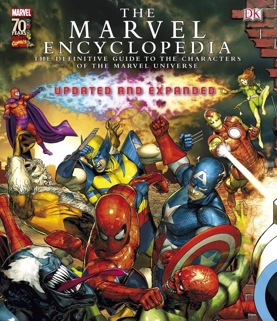
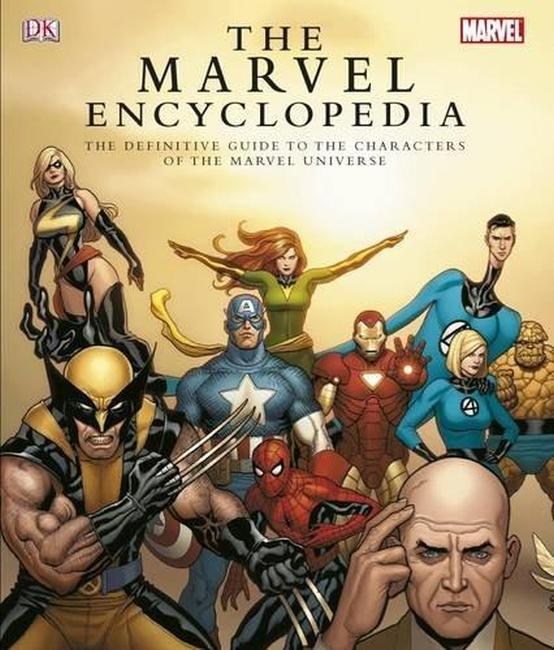

The Marvel Encyclopedia is the name of several reference books that cover Marvel Comics.
The original run of Marvel Encyclopedias were produced by Marvel staff and freelancers. The first volume covers Marvel in general, while the second through sixth volumes go into further detail on the X-Men, The Hulk, Spider-Man, the Marvel Knights, The Avengers, and the Fantastic Four, respectively.
 
The second Marvel Encyclopedia is an unofficial, third-party product that was written by former Marvel editor Tom DeFalco and published by Dorling Kindersley. It covers more than 100 top Marvel heroes and villains from A to Z with illustrations, biographies, statistics, essential reading and quizzes.